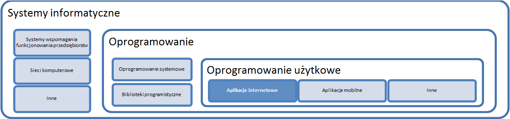
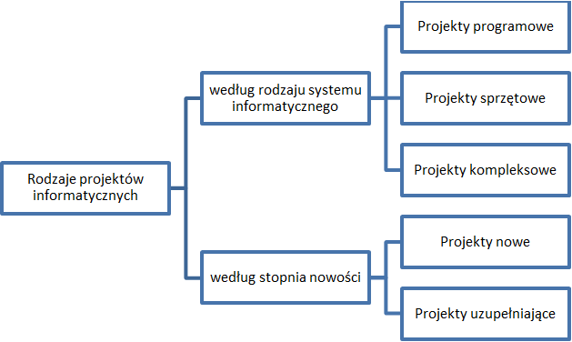

Projekt informatyczny jest to projekt, którego celem jest stworzenie systemu informatycznego. System informatyczny jest to zbiór powiązanych ze sobą elementów – sprzętu, oprogramowania, zasobów ludzkich, elementów organizacyjnych i informacyjnych – którego funkcją jest przetwarzanie danych przy użyciu techniki komputerowej. Systemy informatyczne najczęściej kojarzone są z systemami wspomagającymi funkcjonowanie przedsiębiorstw. Jednak pojęcie systemu informatycznego jest szersze. Zawiera w sobie również oprogramowanie w tym szczególnie popularne obecnie oprogramowanie użytkowe wykorzystujące największą sieć komputerową – Internet.
Niniejsza praca poświęcona będzie zarządzaniu projektami informatycznymi, w wyniku których powstaje oprogramowanie internetowe, przy czym część informacji jest wspólna dla wszystkich projektów informatycznych.
Rys. 1.3.1 Miejsce aplikacji internetowej w klasyfikacji systemów informatycznych
Oprogramowanie internetowe częściej nazywane aplikacją internetową lub webową, aby podkreślić bliską relację z użytkownikiem, są to różnego rodzaju programy, które pracują na oddalonym od użytkownika serwerze, a z komputerem użytkownika komunikują się dzięki Internetowi wykorzystując w tym celu przeglądarkę internetową. To, co wyświetla się użytkownikowi w przeglądarce (interfejs użytkownika) jest jedną z trzech warstw aplikacji internetowej. Pozostałe dwie to baza danych oraz właściwy kod strony, które przechowywane są na serwerze, a użytkownik nie ma do nich bezpośredniego dostępu. Poprzez kod strony należy rozumieć pliki opisujące poszczególne strony aplikacji każdą z osobna (opisane w HTML’u oraz w jednym z języków programowania, np. PHP) oraz pliki opisujące wygląd całej aplikacji tj. pliki CSS i JavaScript.
Projekty informatyczne można sklasyfikować ze względu na to jakiego rodzaju systemu informatycznego dotyczą oraz stopnia nowości projektu.
Rys. 1.3.2 Klasyfikacja projektów informatycznych
Przyjmując za klucz podziału rodzaj systemu informatycznego K. Frączkowski wyróżnia projekty programowe, sprzętowe oraz kompleksowe, które stanowią połączenie dwóch poprzednich. Projekty programowe polegają na wdrożeniu nowego typu oprogramowania z wykorzystaniem istniejących zasobów sprzętowych (np. wdrożenie systemu e-learningowego wśród pracowników). W wyniku projektów sprzętowych następuje modyfikacja stosowanych rozwiązań sprzętowych (np. wymiana komputerów na nowsze).
Ze względu na stopień nowości K. Frączkowski wyróżnia projekty nowe, które wdrażane są w ogranizacjach, w których nie istniał wcześniej system informatyczny oraz projekty uzupełniające, które jedynie dodają nowe elementy do już istniejących rozwiązań.
Projekty informatyczne, niezależnie od ich rodzaju stają się codziennością każdej organizacji. Wynika to przede wszystkim z faktu, że informatyka stała się dziedziną powszechną. Produkty informatyczne towarzyszą nam w codziennym życiu na każdym kroku. Używamy ich w pracy, w domu, w szkole. Od nich niekiedy zależy nasze zdrowie i bezpieczeństwo. Nic więc dziwnego, że wymagania użytkowników względem tych produktów rosną za równo w kwestii ich użyteczności, jak i jakości. Z jednej strony dla firm informatycznych stanowi to niesamowitą okazję do rozwoju, z drugiej zaś wywiera ogromną presję, przez co firmy te działają na granicy własnych możliwości oraz ograniczeń technologii. Prawdopodobnie dlatego projekty informatyczne charakteryzuje dość duży odsetek projektów zakończonych niepowodzeniem – 33 %, z przekroczeniem budżetu – 49% lub terminu – aż 61%. Na taki stan rzeczy mają również wpływ charakterystyczne cechy projektów informatycznych:
Złożoność projektów informatycznych – Projekty informatyczne bardzo często dotyczą wielu zmieniających się w czasie dziedzin problemowych (finanse, inżynieria techniczna, zarządzanie), które z kolei uzależnione są od zmieniającego się prawa, rynku i technologii. Nowe systemy bardzo często muszą współdziałać z innymi systemami, które mogą być wykonane w starszej lub zupełnie innej technologii. Ponadto bardzo duże tempo zmian w dziedzinie informatyki wymusza na systemach informatycznych ciągłego doskonalenia. Zmianie ulegają również przedsiębiorstwa, ich otoczenie i całe społeczności, co wymaga od systemów informatycznych pewnej elastyczności i otwartości.
Abstrakcyjny charakter oprogramowania – Znacząca część efektów pracy programistycznej jest niewidoczna dla zleceniodawcy, co utrudnia bieżącą weryfikację jej poprawności przez zleceniodawcę jak i koordynatora projektu. Manager w ocenie postępów prac posiłkuje się więc raportami odpowiedzialnych pracowników. Zleceniodawca dokonuje oceny na podstawie doniesień koordynatora projektu. Sam często nie posiada wiedzy, która umożliwiłaby mu sprawdzenie kodu. W przypadku gdy zleceniodawca jednak taką wiedzę posiada, sprawdzenie kodu może okazać się nieprzydatne z punktu widzenia realizacji celu biznesowego projektu, ponieważ kod może nie być wykonany zgodnie z dobrymi praktykami, ale i tak funkcjonować poprawnie. Ponadto sprawdzenie wszystkich przypadków użycia i danych wejściowych jest bardzo praco- i czasochłonne, a dodatkowo procesu tego nie ułatwia brak skalowalności błędów – mała pomyłka może powodować duży błąd. Stąd weryfikacja projektu przez klienta może odbyć się bardzo późno, gdy projekt jest już na ukończeniu, a jego efekty są widoczne. Wprowadzanie zmian na tym etapie jest dużo bardziej kosztowne niż na etapie planowania czy nawet początkowych etapach realizacji.
Niepowtarzalność każdego systemu i projektu informatycznego – Niezależnie od tego czy wdrażamy znany system w nowym miejscu, czy też nowy system w organizacji znanej zespołowi projektowemu, projekt zawsze ma niepowtarzalny charakter. Taka sytuacja utrudnia przewidywanie problemów, które mogą sie pojawić w toku realizacji projektu.
Brak praw fizyki i innych typowych ograniczeń – Zadany cel projektu informatycznego może zostać osiągnięty na wiele różnych sposobów, co wymaga od projektantów szerszej analizy problemu. Analiza ta powinna uwzględniać konsekwencje wyboru jednego rozwiązania w stosunku do drugiego. Wybór konkretnego rozwiązania zazwyczaj wymaga akceptacji klienta, który może nie rozumieć niektórych zagadnień czy specyficznych ograniczeń technolgoii, co rodzi problemy komunikacyjne na styku wykonawca-zamawiający.
Wykładniczy charakter kosztu jednostkowego projektu – W przypadku projektów informatycznych wzrost wielkości projektu nie prowadzi do spadku jego kosztu jednostkowego. Koszt projektu rośnie nieliniowo wraz ze wzrostem projektu – wzrost pracochłonności jest wykładniczy ze współczynnikiem większym niż jeden. Dodatkowo efektu tego nie można w pełni zniwelować zatrudniając większą liczbę programistów, ponieważ część modułów musi zostać wykonana sekwencyjnie, a nie równocześnie. Ponadto niektóre czynności nie mogą zostać skrócone. Tak jak w przypadku dwóch kobiet ciężarnych dziecko nie urodzi się za cztery i pół miesiąca, tak zatrudniając dwóch programistów do tego samego zadania nie zmniejszymy czasu realizacji dwukrotnie.
Zależność między zarządzaniem a metodyką wytwarzania oprogramowania – Między sposobem zarządzania projektem informatycznym a metodyką wytwarzania oprogramowania występuje ścisły związek, który niedoceniony może doprowadzić do upadku projektu.
Do powyższych cech można jeszcze dodać brak sprawdzonych wzorców postępowania, małą powtarzalność wykonywanych czynności, czy brak norm zużycia zasobów (w szczególności czasu pracy) dla czynności czy elementów określonych co do wielkości i złożoności. Wszystko to sprawia, że zarządzanie projektami informatycznymi wymaga od kierownika projektu różnorodnych kompetencji technicznych jak i miękkich. Copers z Software Productivity Research Inc. wyodrębnił 15 obszarów, które są kluczowe dla sprawnego i efektywnego zarządzania projektami informatycznymi:
Projekty typu „mass update”
Capers wskazuje na wzrost znaczenia projektów typu „mass update” w XXI wieku, a przez to i rosnącą potrzebę odpowiednich kwalifikacji wśród managerów do zarządzania tego rodzaju projektami. Projekty „mass update” są to ogromne projekty usprawniające wymuszone przez zmiany prawne, gospodarcze, czy też zmianę kalendarza, jak to miało miejsce w 2000 roku. Większość systemów informatycznych nie była przygotowana na zmianę daty, co wymagało dużych nakładów finansowych i czasowych, aby je dostosować. Polska stanie w obliczu projektów typu „mass update” w momencie wprowadzenia euro jako waluty obowiązującej. Trend ten na pewno jest istotny jednak nie ma znaczącego wpływu na małe i średnie projekty aplikacji internetowych, które stanowią obiekt rozważań dalszej części pracy. Warto jednak mieć na uwadze problem ciągłego dostosowywania aplikacji do zmieniających się technologii i uwarunkowań otoczenia. Koordynatorzy małych i średnich projektów aplikacji internetowych mają styczność z tym problemem w przypadku HTML’a 5 i CSS 3, które nie są wspierane przez starsze przeglądarki, co wymaga decyzji o nie projektowaniu stron z nowymi funkcjonalnościami tak, aby były dostępne dla wszystkich wersji i rodzajów przeglądarek lub projektowaniu z wykorzystaniem tychże nowych funkcjonalności, licząc się przy tym z brakiem kompatybliności ze starszymi wersjami i niektórymi rodzajami przeglądarek. Najdroższą z możliwych dróg jest projektowanie kilku wersji aplikacji w zależności od przeglądarki czy wręcz urządzenia, na którym strona jest wyświetlana. Odpowiedzią na potrzebę projektowania dla kilku urządzeń z uwzględnieniem aspektu ekonomicznego jest projektowanie stron, których wygląd dostosowuje się do szerokości ekranu urządzenia, z którego korzysta użytkownik strony (responsive design). Ten trend zostanie omówiony szerzej w kolejnym rozdziale pracy przy okazji tematu projektowania wyglądu strony.
Oprogramowanie wspomagające planowanie zasobów przedsiębiorstwa (ERP)
Kolejnym trendem na najbliższe lata, który podkreśla Capers jest potrzeba tworzenia w przedsiębiorstwach zintegrowanych systemów do zarządzania zasobami (ERP). Większość działów przedsiębiorstwa (marketing, finanse, HR) posiada systemy dostosowane do swoich potrzeb. Aby efektywniej zarządzać zasobami oraz żeby uzyskać całościowy obraz organizacji, potrzebny jest system dla całego przedsiębiorstwa jak np. SAP, czy Oracle. Projekty tego typu wymagają od koordynatora nie tylko wiedzy technicznej, ale również znacznych umiejętności społecznych czy wręcz politycznych.
Zarządzanie „wirtualnymi zespołami” z wykorzystaniem Internetu
Wzrost znaczenia Internetu samego w sobie oraz jako narzędzia komunikacji jest trendem, który z punktu widzenia małych i średnich projektów aplikacji internetowych ma kolosalne znaczenie. Raz, że dzięki powszechności i popularności Internetu rośnie liczba tego typu projektów. Dwa, że zespoły projektowe mogą maksymalizować czas pracy nawet do 24h na dobę wykorzystując różnice w lokalizacji, a przez to i w strefach czasowych oraz minimalizować koszty poprzez outsourcing programistów z krajów o niższych stawkach. Oczywiście należy tutaj rozważyć wpływ takich rozwiązań na jakość kodu i ostatecznego produktu. Być może jest możliwość zastosowania tych rozwiązań przy jednoczesnym zachowaniu jakości, co jednak wymaga znacznego zaangażowania koordynatora projektu. Zarządzanie zespołami wirtualnymi daje duże możliwości, pozwala również angażować osoby, które z jakiś względów nie mogą fizycznie uczestniczyć w projekcie, a mają potrzebne informacje czy wiedzę do jego ralizacji. Z drugiej zaś strony praca w wirtualnym zespole dla samego zespołu jak i koordynatora jest dużym wyzwaniem ze względu chociażby na aspekt kontroli czy motywacji.
Szacowanie rozmiaru projektu
Poprzez rozmiar projektu należy rozumieć ilość różnorodnych produktów projektu tj. ilość kodu, dokumentów, testów. Ocena wielkości projektu stanowi podstawę do jego wyceny i jest jednym z podstawowych zadań project managera. Według Capersa to trudne zadanie o wysokim wskaźniku błędów zostało sprowadzone do zadania łatwiejszego i o akceptowalnym wskaźniku błędów dzięki metodzie punktów funkcyjnych. Metoda ta pozwala ocenić ilość funkcjonalności, które otrzymuje użytkownik. Jest ona więc zależna od użytkownika, a jednocześnie niezależna od zastosowanej technologii. Wykorzystując liczbę punktów funkcyjnch można następnie przy użyciu modelu COCOMO oszacować liczbę osobogodzin, co z kolei może posłużyć do wyceny projektu oraz opracowania jego harmonogramu. Metody punktów funkcyjnych można stosować do projektów nowych, jak i polegających na modernizacji, w stosunku do całego systemu, jak i jego części. Ze względu na swoje zalety metoda ta jest dość popularna. Jednakże wyniki obliczeń przy małej ilości punktów funkcyjnych mogą być niereprezentatywne, a cały proces liczenia jest czasochłonny i wymaga wysoce specjalistycznej wiedzy. Zważywszy na aspekty negatywne metoda punktów funkcyjnych ma ograniczone zastosowanie w przypadku projektów małych i średnich. Nie podlega jednak wątpliwości, że wypracowanie i stosowanie jednolitych miar projektów jest kluczowe w celu sprawnego zarządzania i porównywania.
Estymacja kosztów
Estymacja kosztów jest to planowanie harmonogramów, zasobów i kosztów produkcji i utrzymania większości produktów projektu. Znaczącym generatorem kosztów jest też odnajdywanie i naprawa błędów oprogramowania, dlatego estymacja kosztów powinna również uwzględniać działania na rzecz jakości. Capers uporządkował proces estymacji kosztów w 8 krokach.
Pomimo że metod i narzędzi estymacji jest bardzo wiele, koordynatorzy projektów bardzo rzadko posiadają formalne zaświadczenia ich znajomości. Niewielu managerów może się cieszyć dostępem do takich narzędzi w swoim miejscu pracy, a jeszcze mniej ma możliwość porównania obecnie realizowanych projektów z projektami z przeszłości.
Planowanie projektu
Planowanie projektu jest ściśle powiązane z jego szacowaniem. W tym zakresie do podstawowych umiejętności managera należy znajomość metody PERT, analizy ścieżki krytyczej, czy też wykresu Gantta i choć narzędzia te znalazły szerokie zastosowanie w innych dziedzinach inżynieryjnych, nie są powszechnie wykorzystywane w przypadku projektów informatycznych. Jest to podyktowane trudnościami w oszacowaniach oraz częstymi zmianami, co z kolei rodzi potrzebę nanoszenia poprawek. Metody te choć systematyzują, a przez to również ułatwiają prace, nie należą jednak do przyjaznych ani dla zespołu projektowego, ani tym bardziej dla klienta.
Metodyki zarządzania projektami
Jednym z podstawowych warunków realizacji projektu jest sprawna organizacja pracy zespołu projektowego. W tym celu ustala się ogólnie akceptowane, rozumiane i przestrzegane zasady współpracy. Zbiór tych zasad określa się mianem metodyki zarządzania. Obecnie w Polsce największą popularnością cieszą się metoda PRINCE2, standard PMBOK oraz programowanie zwinne. Wiele projektów realizowana jest nadal w oparciu o zasady niesformalizowane – wiedzę i doświadczenie zespołu i jak pokazują badania projekty takie częściej kończą się porażką.
Wybór technologii
Przed wyborem języka programowania nie stają jedynie firmy, które tworzą wszystkie rozwiązania w jednym języku, co jest jednak rozwiązaniem bardzo ograniczającym dla firmy i może prowadzić do utraty konkurencyjności przez nią. Zdarza się, że klienci z góry narzucają technologię, w której ma zostać wykonana aplikacja. Częściej jednak to wykonawcy zalecają czy wręcz decydują o wyborze konkretnej technologii. Jeśli chodzi o kod aplikacji, wybierać można między językami programowania kompilowalnymi, jak Java czy C# oraz obiektowymi, takimi jak PHP, Python, czy Ruby oraz ich framework’ami. Jeśli chodzi o warstwę prezentacji tutaj właściwie problemu wyboru nie ma. Wraz z HTML5 i CSS3 pojawiły się nowe możliwości, które nie są jeszcze w pełni wykorzystywane, ale na pewno będą. Dla aplikacji prostszych, wymagających mniej indywidualnych rozwiązań można również skorzystać z gotowych CMS’ów, takich jak Wordpress, Joomla, czy Drupal. Niestety nie istnieje uniwersalna recepta wyboru języka, ponieważ jest to podykotwane wieloma czynnikami, jak np. koszty, umiejętności zespołu, wydajność i w zależości od projektu może być położony inny nacisk na każdy z tych czynników.
Kontrola jakości
Kontrola jakości ma kluczowe znaczenie z punktu widzenia realizacji harmonogramu i kontroli kosztów. Niemniej jedank wielu managerów zaniedbuje ten obszar zarządzania projektem. Aby osiągnąć poziom jakości zadawalający dla użytkownika i zależny od obszaru zastosowania oprogramowania, pomocne jest stosowanie dobrych praktyk tworzenia kodu. Aby ocenić stopień realizacji dobrych praktyk w organizacji można się posłużyć modelem CMMI (Capability Maturity Model Integration), który ocenia dojrzałość w tworzeniu oprogramowania w skali pięciostopniowej od początkującego (nie stosuje się żadnych dobrych praktyk lub są to działania szczątkowe) do optymalizującego (stosuje się dobre praktyki oraz szuka się możliwości wdrożenia kolejnych usprawnień).
Śledzienie postępu prac
W momencie rozpoczęcia prac do zadań koordynatora należy monitorowanie postępu prac, ponoszonych nakładów oraz czas realizacji. Posiadając harmonogram można w łatwy sposób sprawdzić wielkość odchylenia planu od rzeczywistości. Stosując metodę Earned Value można dodatkowo sprawdzić, czy te odchylenia mają tendencję do zmniejszania się, czy też będą się w toku prac nad projektem powiększać. Aby stosować metodę EV nie jest potrzebna wiedza o ilości punktów funkcyjnych. Wystarczy oszacować czasy poszczególnych zadań. Stąd przydatność tej metody wzrasta.
Pomiar projektu
Pomiar projektu jest szczególnie istotny z dwóch powodów. Po pierwsze możliwość pomiaru projektu w usystematyzowany sposób pozwala porównywać projekty między sobą i wnioskować o nowych projektach na podstawie tych z przeszłości. Po drugie wiarygodny pomiar efektów projektu daje pogląd na efektywność projektu i pozwala porównać założenia na początku projektu z jego rezultatami. Niestety metoda punktów funkcyjnych nie jest dopasowana do projektów wykorzystujących technologie internetowe, a nowe metodyki zarządzania dodatkowo utrudniają pomiar tą metodą.
Analiza ryzyka
Projekty informatyczne narażone są na różnego rodzaju ryzyka, w tym ryzyko przekroczenia terminu i/lub kosztów, niedopasowania zakresu, nieuzyskania odpowiedniej jakości, pojawienia się nowych wymagań. Ryzyka te są jednak powszechne, stąd koordynatorzy z dość dużym prawdopodobieństwem są w stanie je przewidzieć, co też czynią, za równo na początku projektu, jak i w jego trakcie. Systematyczna ocena ryzyka oraz udział zespołu w tym procesie zwiększają szansę na powodzenie projektu.
Analiza wartości
Każdy projekt powinien mieć jasno określony cel, również z punktu widzenia zleceniodawcy. Świadomość wartości projektu dla zleceniodawcy pozwala przyjąć najbardziej optymalne metody współdziałania. Jeśli realizacja projektu podyktowana jest argumentem być albo ni być dla organizacji zlecającej, wykonawcy mogą liczyć na pełne zaangażowanie i dostęp do zasobów. Jeśli projekt realizowany jest pod wpływem mody, zaangażowanie i dostep do zasobów będą nieporównywalnie mniejsze i zazwyczaj tylko na początku projektu. Ocena wartości projektu dla wykonawcy wbrew pozorom nie jest zadaniem łatwym, ponieważ zleceniodawcy rzadko bezpośrednio ujawniają swoje motywy lub też motywy te mogą być jedynie deklarowane, a prawdziwy powód realizacji projektu należy dopiero zgłębić. Różnice mogą również występować w ocenie wartości projektu dla całej organizacji zlecającej, jak i poszczególnych osób przypisanych od strony zleceniodawcy do realizacji projektu. Wiedza odnośnie motywów poszczególnych osób w projekcie pozwala koordynatorowi na jego lepsze zarządzanie.
Wycena projektu
Jak już wspomniano wcześniej brak jest jednolitych miar, które w prosty, a zarazem precyzyjny sposób pozwalałyby na pomiar projektów informatycznych. Wykorzystując ten fakt, w obliczu dużej konkurencji na rynku usług informatycznych, dochodzi do sytuacji, w której wykonawcy zaniżają koszty początkowe projektu, co następnie skutkuje przekroczeniem budżetów. Takie zachowania budują mylny obraz rynku projektów informatycznych. Rozwiązaniem dla takich sytuacji jest stosowanie metody budżetowania polegającej na określeniu globalnej wysokości nakładów, umieszczeniu jej w kontrakcie i modyfikowaniu aneksami w miarę postępu prac.
Usprawnienia
Ocena projektu, znajdywanie słabych stron i ich usprawnianie to kolejny obszar zarządzania projektami informatycznymi, który powinien być bliski każdemu koordynatorowi projektów. Dobry manager na podstawie każdego projektu będzie potrafił wyciągnąć wnioski na przyszłość, co można było zrobić lepiej i w kolejnym projekcie postara się nie popełnić tych samych błędów. Obszar ten można również rozumieć jako specyficzny rodzaj projektów – projekty usprawniające. Ich realizacja wiąże się z unikalnymi dla tego typu projektów ograniczeniami. Przede wszystkim jest to konieczność dokonywania zmian bez wstrzymywania pracy obecnie funkcjonującego systemu. Ponadto obecny system często ma słabo przygotowaną lub też nieaktualną dokumentację, a zleceniodawca jest przekonany o potrzebie wprowadzenia zmian, ale uważa, że będą one niewielkie, bo cały system działa dobrze. Niezależnie od podejścia do zagadnienia usprawnień, ich implementację powinna poprzedzać analiza przychodu z inwestycji.